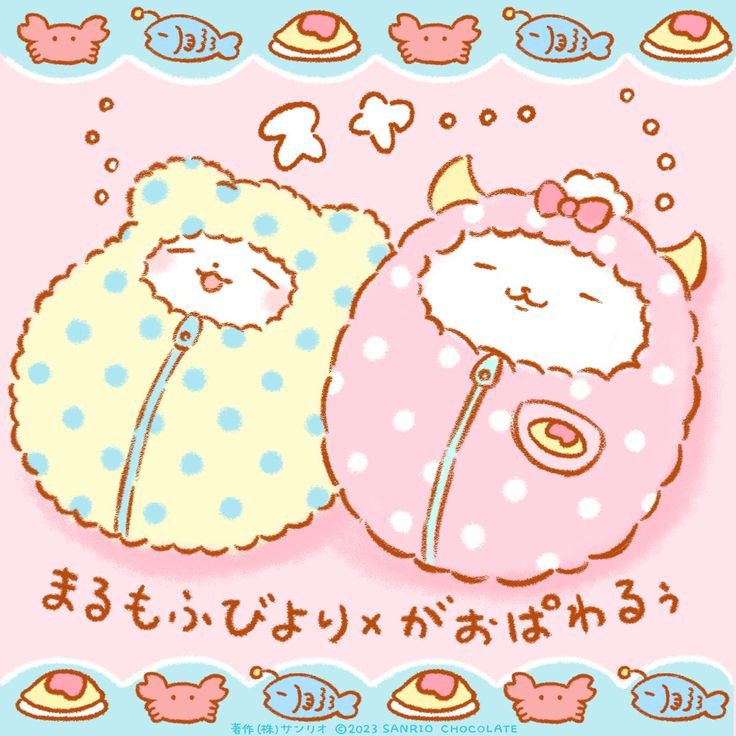
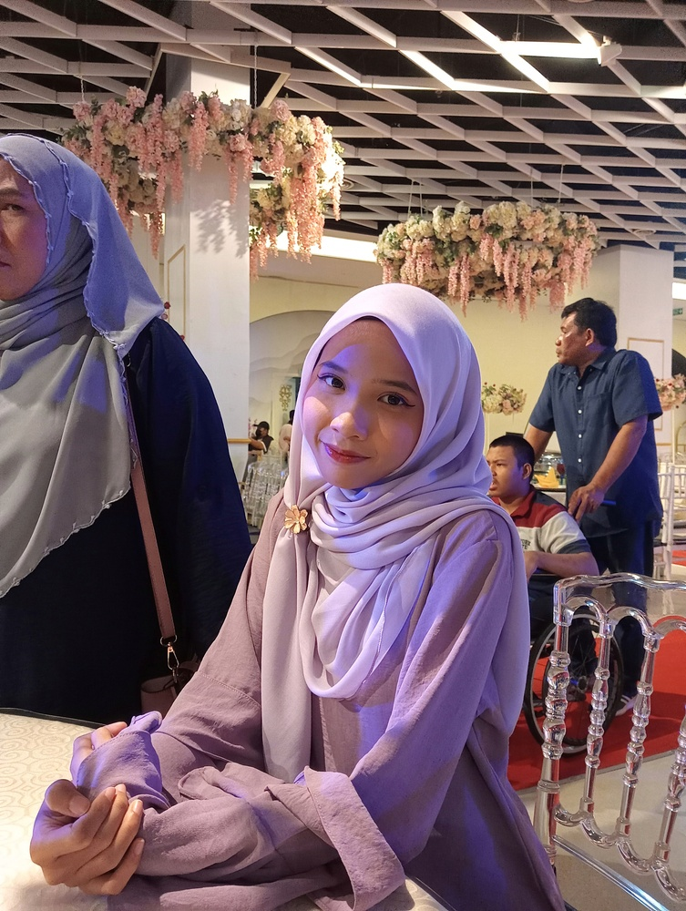
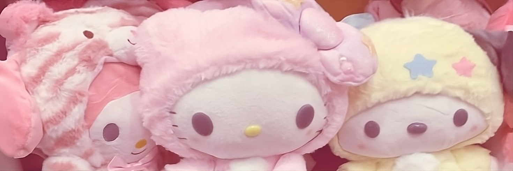
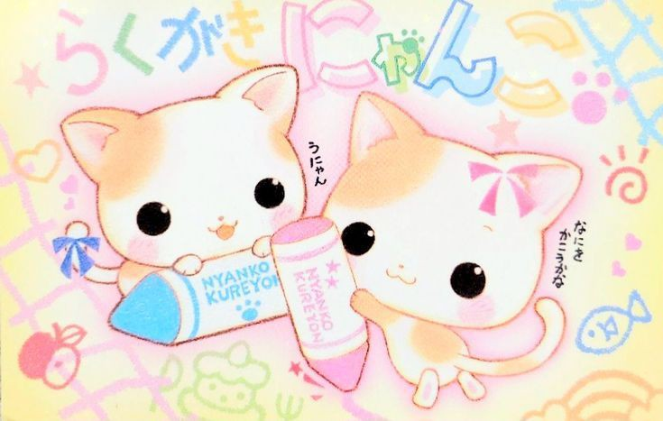

What You Should Know?
Fun FactsI have finished my internship program as a payroll under human resource at Startek BPO, Ara Damansara. Note: I’m always excited to share what I love with others!
|
 |

Rabiatul Adaviyah, 20 years old
|
|  | ||
|  |
Come! listen to my favorite songs |
My favorite Utauloid is Kasane Teto but what exactly is Utauloid ?
UTAUloids, are voice synthesis software characters created using the UTAU program. Similar to Vocaloids, they are used to produce singing vocals by inputting melodies and lyrics. |